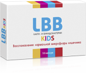

LBB
LBB - cинбиотик, содержащий пробиотические культуры и пребиотические волокна FOS (фруктоолигосахариды).
Выберите этот продукт для получения дальнейшей информации по нему
10 000 000 000 полезных
бактерий в одной капсуле.
LBB - лидер по содержанию бактерий,
среди аналогичных препаратов-синбиотиков!
Сочетания пробиотиков и пребиотиков в желудочно-кишечномтракте, способствующих росту кишеной флоры

Целевое назначение
желаемой культуры
Общая поддержка бифидобактерий и интенсивное стимулирование роста Пробиотиков
Устранению дисбактериоза и укреплению иммунитета
Восстановлению микрофлоры кишечника и устранению вредного воздействия антибиотиков на организм
Улучшению структуры кожи, снижению аллергических реакций
Настоящая Политика конфиденциальности персональных данных (далее – Политика конфиденциальности) действует в отношении всей информации, которую Сайт ООО «Формула-ФР», расположенный на доменном имени www.sjcollagen.ru (далее – Сайт), может получить о Пользователе во время использования Сайта, материалов и продуктов Сайта.
2.1. В настоящем документе используются следующие термины:
2.1.1. «Администрация сайта ООО «Формула-ФР» (далее – Администрация сайта) – уполномоченные сотрудники на управление сайтом, действующие от имени ООО «Формула-ФР», которые организуют и (или) осуществляет обработку персональных данных, а также определяет цели обработки персональных данных, состав персональных данных, подлежащих обработке, действия (операции), совершаемые с персональными данными.
2.1.2. «Персональные данные» - любая информация, относящаяся к прямо или косвенно определенному или определяемому физическому лицу (субъекту персональных данных).
2.1.3. «Обработка персональных данных» - любое действие (операция) или совокупность действий (операций), совершаемых с использованием средств автоматизации или без использования таких средств с персональными данными, включая сбор, запись, систематизацию, накопление, хранение, уточнение (обновление, изменение), извлечение, использование, передачу (распространение, предоставление, доступ), обезличивание, блокирование, удаление, уничтожение персональных данных.
2.1.4. «Конфиденциальность персональных данных» - обязательное для соблюдения Оператором или иным получившим доступ к персональным данным лицом требование не допускать их распространения без согласия субъекта персональных данных или наличия иного законного основания.
2.1.1. «Администрация сайта ООО «Формула-ФР» (далее – Администрация сайта) – уполномоченные сотрудники на управление сайтом, действующие от имени ООО «Формула-ФР», которые организуют и (или) осуществляет обработку персональных данных, а также определяет цели обработки персональных данных, состав персональных данных, подлежащих обработке, действия (операции), совершаемые с персональными данными.
2.1.2. «Персональные данные» - любая информация, относящаяся к прямо или косвенно определенному или определяемому физическому лицу (субъекту персональных данных).
2.1.3. «Обработка персональных данных» - любое действие (операция) или совокупность действий (операций), совершаемых с использованием средств автоматизации или без использования таких средств с персональными данными, включая сбор, запись, систематизацию, накопление, хранение, уточнение (обновление, изменение), извлечение, использование, передачу (распространение, предоставление, доступ), обезличивание, блокирование, удаление, уничтожение персональных данных.
2.1.4. «Конфиденциальность персональных данных» - обязательное для соблюдения Оператором или иным получившим доступ к персональным данным лицом требование не допускать их распространения без согласия субъекта персональных данных или наличия иного законного основания.